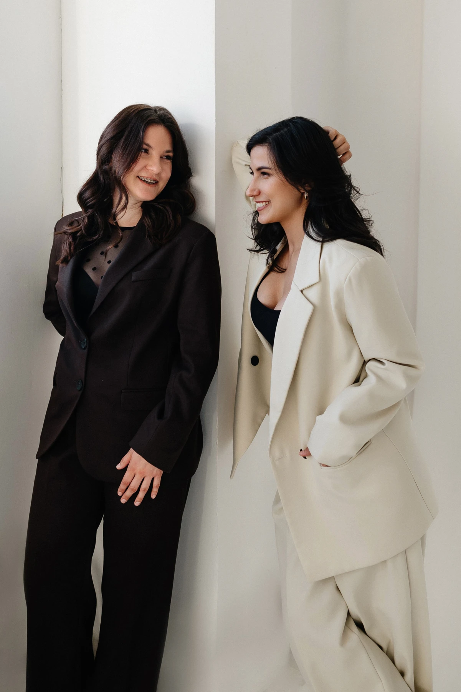

Отдел растёт без общих правил
Нужно договориться о ролях, ответственности и взаимодействии.
02 / Внедрение
Собираем команду и работающую систему продаж: роли, подбор, обучение, CRM и регулярное управление. Помогаем собственнику передавать операционные задачи.
Обсудить построение отдела
Нужно договориться о ролях, ответственности и взаимодействии.
Важные решения и контроль нужно переводить в регулярное управление.
Нужно связать CRM, показатели, мотивацию и действия команды.
Маршрут работы
Двигаемся по этапам: обсуждаем решения, проверяем их с командой и корректируем по результатам работы.
Определяем результат, участников и границы проекта.
Описываем роли, процессы и необходимые инструменты.
Связываем правила работы, CRM и управленческие показатели.
Разбираем изменения с командой и проверяем их в работе.
Оцениваем практику, корректируем решения и передаём рабочие материалы.
Сроки и состав этапов согласуем до начала проекта.

На выходе
Система, которую команда понимает и может поддерживать в ежедневной работе.
Команда понимает, кто за что отвечает и как передаются задачи.
Правила, CRM и отчётность связаны с повседневными действиями.
Руководитель видит показатели, обсуждает отклонения и принимает решения.
Согласованные документы и инструменты для дальнейшей самостоятельной работы.
Организация проекта
До начала проекта согласуем результат, задачи, участников и порядок встреч. Определяем, какие данные нужны для работы.
Собственник или руководитель, ключевые участники команды со стороны бизнеса и эксперты proДАВАТЬ.
Работаем онлайн. График встреч и способ обмена материалами согласуем заранее.
Зависят от масштаба отдела, глубины задачи и состава работ. Условия фиксируем до начала проекта.